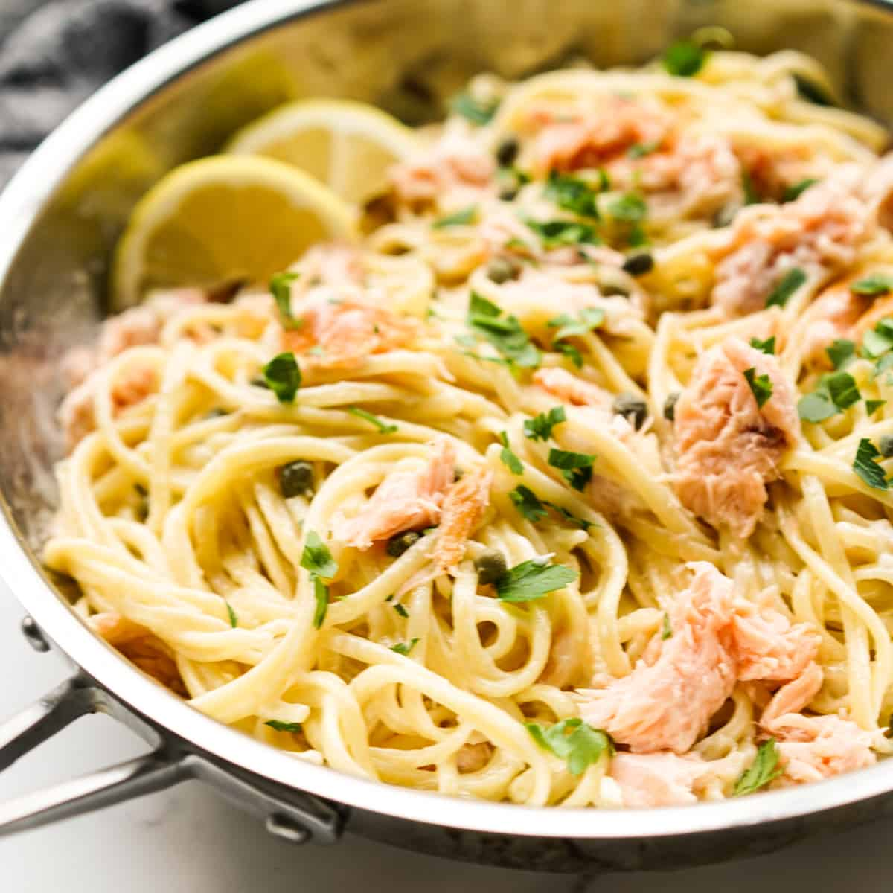

Home Page
Creamy Smoked Salmon Pasta

Description
This smoked salmon pasta is a lighter version of pasta carbonara.
For people who want the flavor but not the bacon, smoked salmon is the perfect substitute!
Ingredients
- 1 (16 ounce) package penne pasta
- 6 tablespoons butter
- 1/2 onion, finely chopped
- 2 tablespoons all-purpose flour
- 2 teaspoons garlic powder
- 2 cups skim milk
- 1/2 cup grated Romano cheese
- 1 cup frozen green peas, thawed and drained
- 1 cup canned mushrooms, drained
- 10 ounces smoked salmon, chopped
Steps
- Gather all ingredients.
- Bring a large pot of lightly salted water to a boil.
Add penne and cook, stirring occasionally, until tender yet firm to the bite, about 11 minutes; drain.
- Melt butter in a large skillet over medium heat.
Sauté onion in butter until tender, 2 to 3 minutes.
Stir flour and garlic powder into onion.
- Gradually stir in milk.
Heat to just below boiling point, then gradually stir in cheese until sauce is smooth.
Stir in peas and mushrooms; cook over low heat until warmed through, about 4 minutes.
- Toss in smoked salmon and cook until heated through, about 2 minutes.
Serve over pasta